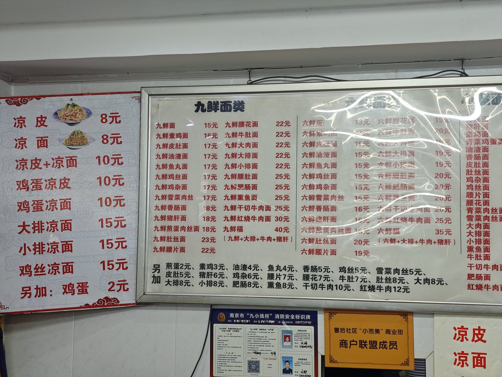

小虚空🍥
@tokerumaisurii
@LihaiGeUpasaka @hatunagi_yuzuki 我草好熟悉的文风啊

蠡海
@LihaiGeUpasaka
朋友们好！今天我的晚饭在南京。
六鲜面馆(曹后村店)，一家不起眼的居民区小店，老板皖北口音。
我点的九鲜皮肚面，17元。在城区算是比较实惠。这家的九鲜是皮肚,猪肝,肉丝,青菜,番茄,平菇/香菇/金针菇,木耳,荷包蛋,香肠。
面条是手擀面，偏软。汤鲜度适中，辣椒油很香。一碗下肚，几乎吃撑了。 https://t.co/Cm7zDBt3p3